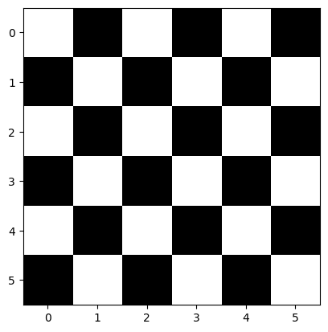
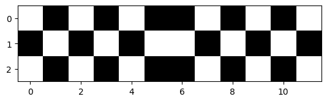

package_name = "numpy"
try:
__import__(package_name)
print(f"{package_name} is already installed.")
except ImportError:
print(f"{package_name} not found. Installing...")
%pip install {package_name}numpy is already installed.|
|

|
The NumPy (Numerical Python) library first appeared in 2006 and is the preferred Python array implementation. It offers a high-performance, richly functional n-dimensional array type called array. Operations on arrays are up to one or two orders of magnitude faster than those on lists.
In this chapter, we explore the array’s basic capabilities. The built-in lists can have multiple dimensions, and you generally process multi-dimensional lists with nested loops or list comprehensions with multiple clauses. A strength of NumPy is “array-oriented programming,” which uses functional-style programming with internal iteration to make array manipulations concise and straightforward, eliminating the kinds of bugs that can occur with explicitly programmed loops.
In Python the types are dynamically inferred and we do not have to allocate the memory by ourselves. This type of flexibility also points to the fact that Python variables are more than just their values; they also contain extra information about the type and the size of the value:

Similarly, the list in Python is very flexible that can store heterogeneous objects. But this flexibility comes at a cost: to allow these flexible types, each item in the list must contain its type, size, and other information. Every element is a complete Python object. In the special case that all variables are of the same type, much of this information is redundant, so storing the data in a fixed-type array can be much more efficient. The difference between a dynamic-type list and a fixed-type (NumPy-style) array is illustrated:

At the implementation level, the array essentially contains a single pointer to one contiguous block of data. The Python list, on the other hand, includes a pointer to a block of pointers, each of which in turn points to a whole Python object like the Python integer we saw earlier.
The advantage of the
listis flexibility: because each list element is a full structure containing both data and type information, the list can be filled with data of any desired type. Fixed-typeNumPy-style arrays lack this flexibility but are much more efficient for storing and manipulating data.
From the previous lecture, we know that every object consists of data and methods. The ndarray object of the NumPy package not only provides efficient storage of array-based data but adds to this efficient operations on that data.
array from Existing Data (Constructor)package_name = "numpy"
try:
__import__(package_name)
print(f"{package_name} is already installed.")
except ImportError:
print(f"{package_name} not found. Installing...")
%pip install {package_name}numpy is already installed.The NumPy documentation recommends importing the numpy module as np so that you can access its members with “np.”
array using from fix sequenceThe numpy module provides various functions for creating arrays. Here we use the array() function, which receives a collection of elements and returns a new array containing the argument’s elements. Let’s pass a list for example:
(array([ 2, 3, 5, 7, 11]), numpy.ndarray)The array() function copies its argument’s contents into the array. Note that the type is numpy.ndarray, but all arrays are output as “array.”
The array() function copies its argument’s dimensions. Let’s create an array from a two-row-by-three-column list:
(array([[1, 2, 3],
[4, 5, 6]]),
numpy.ndarray)array AttributesThe array function determines an array’s element type from its argument’s elements. You can check the element type with an array’s dtype attribute:
integers = np.array([[1, 2, 3], [4, 5, 6]])
floats = np.array([0.0, 0.1, 0.2, 0.3, 0.4])
integers.dtype, floats.dtype(dtype('int32'), dtype('float64'))As you’ll see in the next section, various array-creation functions receive a dtype keyword argument so you can specify an array’s element type.
For performance reasons, NumPy is written in the C programming language and uses C’s data types. By default, NumPy stores integers as the NumPy type int_ values — which correspond to 32-bit (4-byte) integers in C (this may be platform-dependent) — and stores floating-point numbers as the NumPy type float64 values — which correspond to 64-bit (8-byte) floating-point values (double) in C. In our examples, most commonly, you’ll see the types int32, float64 and bool for non-numeric data (such as strings). The complete list of supported types is at https://docs.scipy.org/doc/numpy/user/basics.types.html.
The attribute ndim contains an array’s number of dimensions and the attribute shape contains a tuple specifying an array’s dimensions:
Here, integers have 2 rows and 3 columns (6 elements) and floats are one-dimensional, containing 5 floating numbers.
You can view an array’s total number of elements with the attribute size and the number of bytes required to store each element with itemsize:
Note that the integers’ size is the product of the shape tuple’s values — two rows of three elements each for a total of six elements. In each case, itemsize is 4 because integers contain int32 values and 8 since floats contain float64 values.
array with Specific ValuesNumPy provides functions zeros(), ones() and full() for creating arrays containing 0s, 1s or a specified value, respectively. By default, zeros() and ones() create arrays containing float64 values. We’ll show how to customize the element type momentarily. The first argument to these functions must be an integer or a tuple of integers specifying the desired dimensions. For an integer, each function returns a one-dimensional array with the specified number of elements:
For a tuple of integers, these functions return a multidimensional array with the specified dimensions. You can specify the array’s element type with the zeros() and ones() function’s dtype keyword argument:
The array returned by full() contains elements with the second argument’s value and type:
array from sequence generated by different methodsarange()Let’s use NumPy’s arange function to create integer ranges — similar to using the built-in function range. In each case, arange first determines the resulting array’s number of elements, allocates the memory, then stores the specified range of values in the array:
It is the same as
range()which takes three argumentsnumpy.arange(start, stop, step)
linspace()You can produce evenly spaced floating-point ranges with NumPy’s linspace() function. The function’s first two arguments specify the starting and ending values in the range, and the ending value is included in the array. The optional keyword argument num specifies the number of evenly spaced values to produce:
arrayYou also can create an array from a range of elements, then use the array method reshape() to transform the one-dimensional array into a multidimensional array. Let’s create an array containing the values from 1 through 20, then reshape it into four rows by five columns:
array([[ 1, 2, 3, 4, 5],
[ 6, 7, 8, 9, 10],
[11, 12, 13, 14, 15],
[16, 17, 18, 19, 20]])Note the chained method calls in the preceding snippet. First, arange produces an array containing the values 1–20. Then we call reshape() on that array to get the 4-by-5 array that was displayed. You can reshape() any array, provided that the new shape has the same number of elements as the original. So a six-element one-dimensional array can become a 3-by-2 or 2-by-3 array, and vice versa!
List vs. array Performance: Introducing %timeitMost array operations execute significantly faster than corresponding list operations. To demonstrate, we’ll use the %timeit magic command, which times the average duration of operations.
Here, let’s use the random module’s randint() function with a list comprehension to create a list of six million die rolls and time the operation using %timeit:
%timeit rolls_list = [random.randint(1, 6) for i in range(0, 6_000_000)] #_ is use to separate long integer3.67 s ± 15.6 ms per loop (mean ± std. dev. of 7 runs, 1 loop each)By default,
%timeitexecutes a statement in a loop, and it runs the loop seven times. If you do not indicate the number of loops,%timeitchooses an appropriate value.
Now, let’s use the randint() function from the numpy.random module to create an array
One-dimensional arrays can be indexed and sliced using the same syntax and techniques demonstrated in the “Lists and Tuples” chapter. Here, we focus on array-specific indexing and slicing capabilities.
To select an element in a two-dimensional array, specify a tuple containing the element’s row and column indices in square brackets:
array([[ 87, 96, 70],
[100, 87, 90],
[ 94, 77, 90],
[100, 81, 82]])To select a single row, specify only one index in square brackets:
To select multiple sequential rows, use slice notation:
To select multiple non-sequential rows, use a list of row indices (fancy indexing):
Let’s select only the elements in the first column:
The 0 after the comma indicates that we’re selecting only column 0. The : before the comma indicates which rows within that column to select. In this case, : is a slice representing all rows. You can select consecutive columns using a slice:
or specific columns using a list of column indices:
array is mutable. Therefore, if we want to modify the value of the array, we can use the previous method and put the result on the left-hand side:
Views are objects “see” the data in other objects, rather than having their own copies of the data. Views are also known as shallow copies. Various array methods and slicing operations produce views of an array’s data. The array method view() returns a new array object with a view of the original array object’s data. First, let’s create an array and a view of that array:
We can use the built-in id() function to see that numbers and numbers2 are different objects:
To prove that numbers2 views the same data as numbers, let’s modify an element in numbers, then display both arrays:
Similarly, changing a value in the view also changes that value in the original array:
Slices also create views. Let’s make numbers2 a slice that views only the first three elements of numbers:
Again, we can confirm that numbers and numbers2 are different objects with id():
Now, let’s modify an element both arrays share, then display them. Again, we see that numbers2 is a view of numbers:
Note that this behavior is different from
list, where the slicing will create a new sublist!
Though views are separate array objects, they save memory by sharing element data from other arrays. However, when sharing mutable values, sometimes creating a deep copy with independent copies of the original data is necessary. This is especially important in multi-core programming, where separate parts of your program could attempt to modify your data at the same time, possibly corrupting it.
The array method copy() returns a new array object with a deep copy of the original array object’s data. First, let’s create an array and a deep copy of that array:
(1664107664944, 1664107665712, False)To prove that numbers2 has a separate copy of the data in numbers, let’s modify an element in numbers, then display both arrays:
Recall that if you need deep copies of other types of
Pythonobjects, pass them to thecopymodule’sdeepcopy()function.
We’ve used array method reshape() to produce two-dimensional arrays from one-dimensional array. NumPy provides various other ways to reshape arrays.
The array methods reshape() and resize() both enable you to change an array’s dimensions. Method reshape() returns a view (shallow copy) of the original array with the new dimensions. It does not modify the original array:
(array([[ 0, 96, 70, 100, 87, 90]]),
array([[ 0, 96, 70],
[100, 87, 90]]))A common trick is that you can use -1 to specify the shape in resahpe(). The length of the dimension set to -1 is automatically determined by inferring from the specified values of other dimensions:
Method resize() modifies the original array’s shape in-place. It does not return a value:
We can also do the opposite operation, which takes a multidimensional array and flatten it into a single dimension with the methods flatten() and ravel(). Method flatten() deep copies the original array’s data:
Method ravel() produces a view of the original array, which shares the grades array’s data!
Additionally, we can effortlessly transpose an array‘s rows and columns, causing the rows to turn into columns and the columns into rows. The T attribute returns a transposed view (shallow copy) of the array. Assume that the original grades array presents two students’ grades (the rows) across three exams (the columns). Let’s transpose the rows and columns to examine the data as the grades for three exams (the rows) taken by two students (the columns):
Transposing does not modify the original array but it does create a view of the original array’s data:
You can combine arrays by adding more columns or more rows — known as horizontal stacking and vertical stacking. Let’s create another 2-by-3 array of grades:
Let’s assume grades2 represents three additional exam grades for the two students in the grades array. We can combine grades and grades2 with NumPy’s hstack() (horizontal stack) function by passing a tuple containing the arrays to combine. The extra parentheses are required because hstack() expects one argument:
Next, let’s assume that grades2 represents two more students’ grades on three exams. In this case, we can combine grades and grades2 with NumPy’s vstack() (vertical stack) function:
9.3.4 Exercise 1: Suppose we are developing a chess game and the chess game provide two special checkerboards as follows:
We decide to use 1 to represent the white square and 0 to represent the black square. Write a program to create two 2D arrays to represent the two checkerboards as follows:
[[1, 0, 1, 0, 1, 0],
[0, 1, 0, 1, 0, 1],
[1, 0, 1, 0, 1, 0],
[0, 1, 0, 1, 0, 1],
[1, 0, 1, 0, 1, 0],
[0, 1, 0, 1, 0, 1]][[1, 0, 1, 0, 1, 0, 0, 1, 0, 1, 0, 1],
[0, 1, 0, 1, 0, 1, 1, 0, 1, 0, 1, 0],
[1, 0, 1, 0, 1, 0, 0, 1, 0, 1, 0, 1]]Note you should not directly hardcode the above arrays. You should use Numpy methods to create the arrays. After you have finished the exercise, you can print out the checkerboard using the following code cell.
array([[1., 0., 1., 0., 1., 0.],
[0., 1., 0., 1., 0., 1.],
[1., 0., 1., 0., 1., 0.],
[0., 1., 0., 1., 0., 1.],
[1., 0., 1., 0., 1., 0.],
[0., 1., 0., 1., 0., 1.]])array([[1., 0., 1., 0., 1., 0., 0., 1., 0., 1., 0., 1.],
[0., 1., 0., 1., 0., 1., 1., 0., 1., 0., 1., 0.],
[1., 0., 1., 0., 1., 0., 0., 1., 0., 1., 0., 1.]])# Plot the checkerboard
package_name = "matplotlib"
try:
__import__(package_name)
print(f"{package_name} is already installed.")
except ImportError:
print(f"{package_name} not found. Installing...")
%pip install {package_name}
import matplotlib.pyplot as plt
plt.imshow(checkerboard, cmap='gray')
plt.show()
plt.imshow(checkerboard2, cmap='gray');matplotlib is already installed.

NumPy calculation methods (Reduction)An array includes several methods that carry out computations based on its contents. By default, these methods disregard the array’s shape and utilize all the elements in the calculations. For instance, when computing the mean of an array, it sums all of its elements irrespective of its shape, and then divides by the total number of elements. We can also execute these calculations on each dimension. For example, in a two-dimensional array, we can determine the mean of each row and each column.
array([[ 87, 96, 70],
[100, 87, 90],
[ 94, 77, 90],
[100, 81, 82]])We can use methods to calculate sum(), min(), max(), mean(), std() (standard deviation) and var() (variance) — each is a functional-style programming reduction:
print(grades.sum())
print(grades.min())
print(grades.max())
print(grades.mean())
print(grades.std())
print(grades.var())1054
70
100
87.83333333333333
8.792357792739987
77.30555555555556Numerous calculation methods can be applied to specific array dimensions, referred to as the array’s axes. These methods accept an axis keyword argument that designates the dimension to be utilized in the calculation, providing a convenient means to perform computations by row or column in a two-dimensional array.
Suppose we want to find the maximum grade for each exam, represented by the columns of grades. By specifying axis=0, the calculation is performed on all the row values within each column:
(array([[ 87, 96, 70],
[100, 87, 90],
[ 94, 77, 90],
[100, 81, 82]]),
array([100, 96, 90]),
array([1, 0, 1], dtype=int64))Here, 100 is the maximum value in the first column and its corresponding index (row) is 1 (if there are duplicate elements, the index of the first element will be reported). 96 and 90 are the maximum values in the second and third columns, respectively.
(array([[ 87, 96, 70],
[100, 87, 90],
[ 94, 77, 90],
[100, 81, 82]]),
array([95.25, 85.25, 83. ]))Hence, 95.25 above represents the average of the first column’s grades (87, 100, 94, and 100), 85.25 is the average of the second column’s grades (96, 87, 77, and 81), and 83 is the average of the third column’s grades (70, 90, 90, and 82). Similarly, specifying axis=1 performs the calculation on all the column values within each individual row. To determine each student’s average grade for all exams, we can use:
(array([[ 87, 96, 70],
[100, 87, 90],
[ 94, 77, 90],
[100, 81, 82]]),
array([84.33333333, 92.33333333, 87. , 87.66666667]))This generates four averages — one for the values in each row. Therefore, 84.33333333 is the average of row 0’s grades (87, 96, and 70), and the other averages correspond to the remaining rows. For more methods, refer to https://numpy.org/doc/stable/reference/arrays.ndarray.html.
For more operations such as methods related to linear algebra, we can use the sub-module
numpy.linalg, which implements basic linear algebra, such as solving linear systems, singular value decomposition, etc. However, it is not guaranteed to be compiled using efficient routines, and thus we recommend the use ofscipy.linalg, which will introduce in a later chapter.
array OperatorsThe speed of computations on NumPy arrays can range from very fast to very slow. To optimize performance, the recommended approach is to use vectorized operations, which are typically implemented through NumPy’s universal functions (ufuncs). In scenarios that involve executing numerous small operations repeatedly, the inherent sluggishness of Python often becomes apparent. One such instance is when we loop over arrays to perform operations on each element. For example, suppose we have an array of values and need to compute the reciprocal of each value. A straightforward approach might involve:
def compute_reciprocals(values):
output = np.empty(len(values))
for i in range(len(values)):
output[i] = 1.0 / values[i]
return output
values = np.random.randint(1, 10, 5)
compute_reciprocals(values)array([0.11111111, 0.25 , 0.16666667, 0.14285714, 0.5 ])But if we measure the execution time of this code for a large input, we see that this operation is very slow:
1.33 s ± 3.2 ms per loop (mean ± std. dev. of 7 runs, 1 loop each)Interestingly, the bottleneck in this situation isn’t the operations themselves, but rather the type checking and function dispatches that
Pythonneeds to execute during each iteration of the loop. Whenever the reciprocal is calculated,Pythoninitially verifies the type of the object and performs a dynamic lookup to determine the correct function to employ for that type. If we were using compiled code, this kind of specification would be predetermined before the code execution, resulting in much more efficient computations.
In NumPy, vectorization is the process of performing operations on entire arrays of data, as opposed to individual elements. This is accomplished by applying an operation to the entire array, instead of looping through each element of the array one at a time.
array([0.11111111, 0.25 , 0.16666667, 0.14285714, 0.5 ])The above syntax is the vectorized version of the original code and works due to the broadcasting. Looking at the execution time for our big array, we see that it completes orders of magnitude faster than the Python loop:
The execution time is much faster since the vectorization operation is done via ufuncs, which is a compiled routine. Now we will introduce each concept in detail, including broadcasting, ufuncs and vectorization.
NumPy offers numerous operators that allow us to create simple expressions that carry out operations on whole arrays and returns another array. Firstly, let’s perform element-wise arithmetic with arrays and numeric values by employing arithmetic operators and augmented assignments. Element-wise operations are applied to each element, so the snippet below doubles every element and cubes every element. Each operation returns a new array containing the result:
Augmented assignments modify every element in the left operand in place!
Typically, arithmetic operations necessitate two arrays of identical size and shape as operands. When one operand is a single value, known as a scalar, NumPy carries out the element-wise calculations as though the scalar were an array of the same shape as the other operand, but with the scalar value present in all its elements. This is referred to as broadcasting. The snippets above demonstrate this capability. For instance, numbers * 2 is equivalent to numbers * [2, 2, 2, 2, 2, 2].
Broadcasting can also be applied between arrays of varying sizes and shapes, enabling concise and powerful manipulations. We will present more examples of broadcasting later in this chapter when we introduce NumPy’s universal functions.
arraysArithmetic operations and augmented assignments can be performed between arrays of the same shape. Let’s multiply the one-dimensional arrays numbers and numbers2 (created below), each containing five elements:
numbers2 = np.linspace(1.1, 6.6, 6)
numbers * numbers2 # array([11, 12, 13, 14, 15, 16]) * array([ 1.1, 2.2, 3.3, 4.4, 5.5, 6.6])array([ 12.1, 26.4, 42.9, 61.6, 82.5, 105.6])The outcome is a new array created by multiplying the elements of each operand element-wise — 11 * 1.1, 12 * 2.2, 13 * 3.3, and so on. Arithmetic operations between arrays of integers and floating-point numbers result in an array of floating-point numbers. Let’s see another example:
Note that the above operation is not matrix multiplication. To perform matrix multiplication use the dot() method!
The above operation is the same as using the @ operator:
We can apply broadcasting to higher-dimensional arrays in a similar way. For instance, consider adding a one-dimensional array to a two-dimensional array and observe the resulting output:
(3,) (3, 3)array([[1., 2., 3.],
[1., 2., 3.],
[1., 2., 3.]])Here, the one-dimensional array a is stretched, or broadcasted, across the second dimension in order to match the shape of M.
In NumPy, broadcasting adheres to a strict set of regulations that govern how two arrays interact with one another. These rules are as follows:
arrays differs, the array with fewer dimensions is padded with ones on its leading (left) side to match the number of dimensions of the other array.arrays doesn’t match in any dimension, the array with a shape of 1 in that dimension is expanded to match the shape of the other array.arrays conflict in any dimension and neither is equal to 1, an error is raised.Now let’s take a look at an example where both arrays need to be broadcast:
(4, 1) (3,)(array([[ 0],
[10],
[20],
[30]]),
array([0, 1, 2]))To begin, we need to determine the shapes of the two arrays: a.shape is (4,1) and b.shape is (3,). According to Rule 1, we have to add ones to the shape of b such that its dimensions match those of a. Thus, b.shape becomes (1,3).
Next, Rule 2 states that we need to expand each of the 1s in b.shape to match the corresponding size of the other array. Consequently, a.shape becomes (4,3), and b.shape becomes (4,3) since 1 was replicated three times to match the size of a.
Since the shapes of the two arrays now match, they are compatible.
This entire process can be depicted visually as follows:
Next, let’s look at an example in which the two arrays are incompatible!
First, we need to determine the shapes of the two arrays: M.shape is (3,2), and a.shape is (3,). As per Rule 1, we must pad ones to the shape of a such that its number of dimensions matches that of M. Consequently, a.shape becomes (1, 3), while M.shape remains the same.
Next, Rule 2 requires that we stretch the first dimension of a to match that of M. Therefore, a.shape becomes (3,3), while M.shape stays the same.
However, Rule 3 comes into play, here since the final shapes of the two arrays do not match. As a result, these two arrays are incompatible.
This incompatibility is evident when we attempt to perform this operation.
Both individual values and other arrays can be compared in NumPy. The comparisons are carried out element-wise, producing arrays of Boolean values where the value of each element represents the outcome of the comparison, either True or False:
array([False, False, True, True, True, True])Note that the above expression implicitly used broadcasting!
array([ True, True, True, True, True, True])Now we will delve into how NumPy perform element-wise operations on arrays without using the for loop: NumPy provides more operators/functions as standalone universal functions (also known as ufuncs) that perform various operations element-wise, meaning that they apply the same operation to each element in an array. These functions operate on one or two array-like arguments (such as lists) and are utilized to perform tasks. Some of these functions are automatically invoked when operators like + and * are used with arrays. Each ufunc generates a new array that contains the results of the operation.
NumPy offers a practical interface for various kinds of operations that directly access statically typed and compiled routines. These operations are called vectorized operations. Vectorization is achieved using array operations, such as addition, subtraction, multiplication, and division. In addition, it can also be achieved by using ufunc. These vectorized methods are intended to move the loop to the compiled layer that underpins NumPy, leading to considerably quicker execution.
We can view the complete list, their descriptions and more information about universal functions at https://numpy.org/doc/stable/reference/ufuncs.html
See here for more vectorization examples in different thinking levels.
NumPy’s UfuncsLet’s add two arrays with the same shape, using the add() universal function:
Let’s use the multiply() universal function to multiply every element of numbers2 by the scalar value 5:
Let’s reshape numbers2 into a 2-by-3 array, then multiply its values by a one-dimensional array of three elements:
(array([[10, 20, 30],
[40, 50, 60]]),
array([2, 4, 6]))array([[ 20, 80, 180],
[ 80, 200, 360]])In this case, numbers4 has the same length as each row of numbers3, allowing NumPy to apply the multiplication operation by treating numbers4 as an array with the following values:
If a universal function receives two arrays with different shapes that do not support broadcasting, a ValueError is raised. Vectorization and ufunc functions are closely associated with broadcasting in NumPy, as they are frequently employed together to perform element-wise operations on arrays with varying shapes. By combining vectorization, ufunc functions, and broadcasting, we can effectively execute complex arithmetic operations on NumPy arrays.
There are other special mathematical ufunc. Let’s create an array and calculate the square root of its values using the sin() universal function:
The vectorized operation are often more concise, and it is thus advisable to avoid element-wise looping over vectors and matrices and instead employ vectorized algorithms. The initial step in converting a scalar algorithm to a vectorized algorithm involves verifying that the functions we create can function with vector inputs:
We can achieve this using np.vectorize function:
array([0, 0, 0, 0, 1, 1, 1])Don’t assume
np.vectorize()is faster. It is mainly for convenient and concise purposes as described here.
9.5.4 Exercise 2: Suppose we are dealing with a spreadsheet that records the grade of students. The grade contains the homework, midterm and finals as follows:
| Name | HW1 | HW2 | HW3 | HW4 | Midterm | Final |
|---|---|---|---|---|---|---|
| Alice | 90 | 80 | 70 | 100 | 90 | 95 |
| Bob | 80 | 90 | 100 | 70 | 85 | 80 |
| Charlie | 70 | 100 | 90 | 80 | 95 | 90 |
| David | 60 | 70 | 80 | 90 | 85 | 100 |
| Eve | 50 | 60 | 70 | 80 | 75 | 90 |
We would like to calculate the semester score of each student by the following rules:
The weight of each score is 0.2 (the summation of four homework accounts for 20% of the total scores and each homework has the same weight), 0.4 and 0.4 for HW, Midterm and Final, respectively.
We adjust each student’s score so that the top performer in the class gets a score of 100 by adding the same constant score to each student’s score.
We use a 2D array to model the grades so that each row corresponds to a student’s score. Use the following template to complete the task:
Due to the nature of static typing, the type of a NumPy array does not change once created. However, we can explicitly convert an array of one type to another using the astype() function. This operation always generates a new array with a new type.
array([[0, 0, 0, 0, 0],
[0, 0, 0, 0, 0],
[0, 0, 0, 0, 0],
[0, 0, 0, 0, 0],
[0, 0, 0, 0, 0]], dtype=int64)See https://scipy-lectures.org/intro/numpy/elaborate_arrays.html for more details.
NumPy has its own binary format, not portable but with efficient I/O. This is useful when storing and reading back array data. Use the functions numpy.save() and numpy.load().
array([[0.38791019, 0.93061564, 0.33040029, 0.9810319 , 0.92882123],
[0.87579212, 0.57436978, 0.99856211, 0.83380903, 0.34188505],
[0.30067505, 0.99334148, 0.89929337, 0.78057549, 0.10613898],
[0.71493999, 0.02124826, 0.95090779, 0.12435095, 0.55611604],
[0.05511708, 0.7047183 , 0.26478257, 0.21195283, 0.77090752]])In summary:
To make the code faster using NumPy
a *= 3 instead of a = 3*aarraysfor loops: Find tricks to avoid for loops using NumPy arrays.The comparisons between list and array are summarized as follows:
Python objects:
Python lists are very general. They can contain any kind of object and are dynamically typedPython lists would not be very efficient because of the dynamic typingNumPy provides:
Numpy arrays are statically typed and homogeneous. The type of the elements is determined when the array is createdNumPy arrays can be implemented in a compiled language (C and Fortran is used). Moreover, Numpy arrays are memory efficient